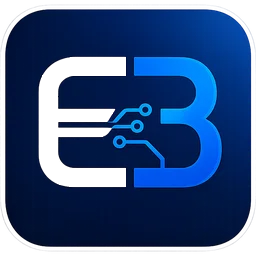
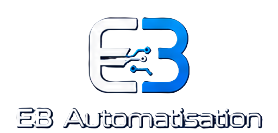
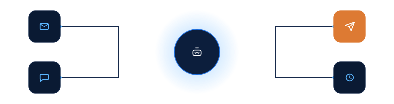
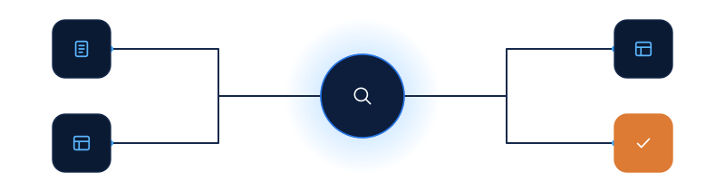
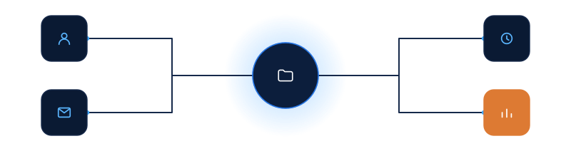
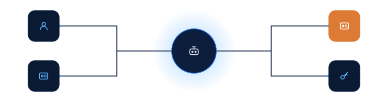
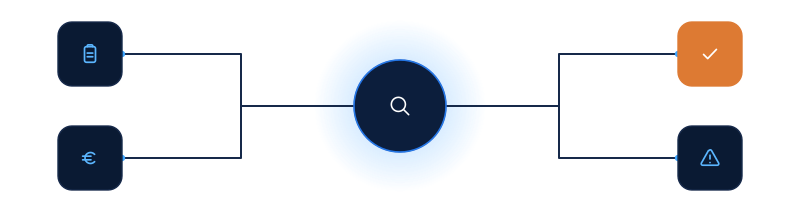
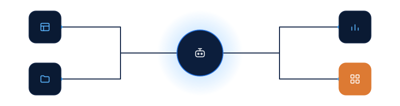

1. Logos officiels
Fichiers strictement inchangés — référence de l'identité de marque. Jamais redessinés, jamais recolorés.
Le logo carré officiel comporte un E blanc et un B bleu en dégradé. Toute version avec un E noir ou une autre variation est interdite.

eb-icon.png — favicon & en-têteCorrigé le 2026-07-15 : bug de transparence sur le E réparé (voir docs/logo-officiel-correction.md)

uploads/156c3b91…png — pied de page2. Palette existante
Tokens déjà définis dans assets/css/tokens.css — aucune couleur nouvelle n'a été introduite pour cette phase.
Bleu nuit & navy
Bleu électrique
Orange (accent secondaire)
Blanc & neutres
3. Principes visuels validés
4. Bibliothèque de composants
Petits pictogrammes factorisés en PHP (functions.php) et vocabulaire de construction des illustrations maîtresses. Voir aussi assets/images/illustrations/eb-flow/README.md.
Helpers PHP (utilisables dans les templates)
eb_contact_icon('phone', 14, '2'); // téléphone / email, header + audit
eb_icon('node' | 'validation' | 'circuit', 20, '1.8'); // registre étendu
eb_status_step($icon_svg, $label); // icône + libellé d'une étape de flux
eb_flow_connector(); // flèche entre deux étapes
Motifs des illustrations maîtresses
5. Règles de contraste
Seuils WCAG 2.2 AA (4.5:1 texte normal, 3:1 grands éléments/graphiques) déjà appliqués sur le site — vérifiés à nouveau ici pour les couleurs utilisées dans les illustrations.
| Paire | Contexte | Ratio | Statut |
|---|---|---|---|
| --blue-3 sur --navy | Icônes dans les EB Data Card | 7.1:1 | Conforme |
| Blanc sur --navy | Icône du hub central | 16.7:1 | Conforme |
| --muted-on-navy-2 sur fond blanc | Texte gris sur fond bleu nuit (déjà en place) | — | Inchangé, déjà conforme |
| --orange (décoratif) | Fond de carte accent — usage décoratif uniquement, pas de texte dessus | 3:1 (graphique) | Conforme (seuil graphique, pas texte) |
| Traits fins sur fond beige | Non utilisé dans ce lot — les illustrations n'utilisent que fond transparent / navy / blanc | — | Sans objet |
6. Les 6 illustrations maîtresses
Rendu sur fond clair, sur fond bleu nuit, et à largeur mobile (375px). Poids indiqué = fichier brut sur disque.
1 — Emails et relances
eb-flow-emails-relances.svg — 3 486 o (3,40 Ko)
2 — Excel, PDF et OCR
eb-flow-excel-pdf-ocr.svg — 3 376 o (3,30 Ko)
3 — CRM et suivi commercial
eb-flow-crm.svg — 3 456 o (3,38 Ko)
4 — Ressources humaines
eb-flow-rh.svg — 3 627 o (3,54 Ko)
5 — Comptabilité automatisée
eb-flow-comptabilite.svg — 3 465 o (3,38 Ko)
6 — Reporting automatisé
eb-flow-reporting.svg — 3 696 o (3,61 Ko)